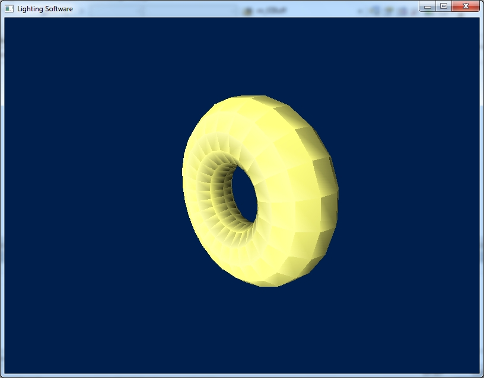
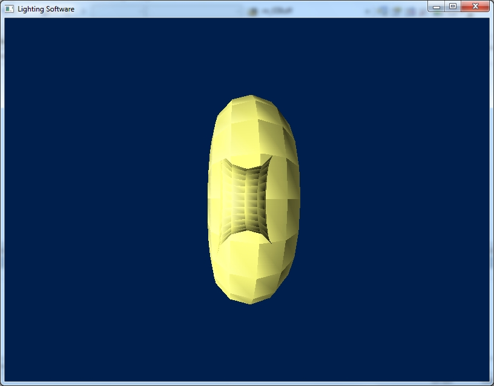

Загрузить архив с примерами ЗДЕСЬ.
На примере как осветить модель торуса (использовалась функция DrawDibDraw, демонстрация positional light source, gouraud shading) мы изучим использование Z буфера. Проект можно загрузить /src/03.001-z_buff/Lighting_Soft_Torus_Z_Buff.
В проекте освещения торуса использовался Z буфер, потому что отбрасывания задних поверхностей не хватает, т.к. у торуса в центре просвечиваются треугольники. Попробуйте закоментировать код работы с Z буфером и вы увидите следующую картину.
В чем заключем смысл использования Z буфера. Z буфер в приложении это двумерный массив такого же размера как экран приложения. Например у нас приложение имеет окно размером 800 на 600 пикселей. Такого же размера надо делать Z буфер, если мы хотим использовать Z буфер. Сначала мы определяем указатель на массив в классе CMeshManager.
float **m_fZBuff;
Наше приложение имеет размеры окна 800 на 600 пикселей, и мы могли бы определить массив Z буфера так:
float m_fZBuff[800][600];
Но размер окна приложения может менятся по желанию пользователя, поэтому мы ввели динамический массив для Z буфера. Сначала в функции Init_Torus мы создаем этот массив для Z буфера, то есть выделяем место нужного размера, под размеры нашего окна приложения:
//создаем Z буфер
m_fZBuff = new float*[m_nViewHeight];
for (UINT i = 0; i < m_nViewHeight; i++)
{
m_fZBuff[i] = new float[m_nViewWidth];
}
Далее в самом начале функции Draw_Torus перед вызовом Clear_BackBuffer мы вызываем код очистки Z буфера, очистка производится в каждом кадре перед рисованием. Для очистки Z буфера мы взяли максимально возможную глубину для сцены 25000.0f.
//очищаем Z-Buffer
for (UINT i = 0; i < m_nViewHeight; i++)
{
for(UINT j = 0; j < m_nViewWidth; j++)
{
//дальняя плоскость отсечения 25000.0f
//это максимальная глубина Z
//мы этой глубиной очищаем Z-Buffer
m_fZBuff[i][j] = 25000.0f;
}
}
Далее в функции Draw_Color_Poly есть такой код, который и показывает работу Z буфера:
for (int xi=(int)m_xl; xi<m_xr; xi++)
{
float fZVal = m_fZBuff[yi][xi];
//если глубина fZVal в Z буфере меньше
//чем глубина пикселя Z
//не рисуем пиксель пропускаем его
if( fZVal < zi )
{
ri+=dr;
gi+=dg;
bi+=db;
zi+=dz;
continue;
}
m_fZBuff[yi][xi] = zi;
Как видим этот код расположен в цикле интеполяции по x. Сначала мы получаем значение из Z буфера:
float fZVal = m_fZBuff[yi][xi];
Далее если это значение что мы получили из Z буфера меньше чем то что мы имеем сейчас по Z - мы продолжаем цикл continue- не меняем значение в Z буфере и не рисуем пиксель. Но если значение из Z буфера больше чем Z, мы заносим значение в Z буфер и рисуем пиксель. Таким образом Z буфер нам говорит- рисовать пиксель на экране или пропусить, так как на экране уже есть наприсованный пиксель с меньшей глубиной, т.е. ближе к зрителю.
if( fZVal < zi )
{
ri+=dr;
gi+=dg;
bi+=db;
zi+=dz;
continue;
}
m_fZBuff[yi][xi] = zi;
В следующем примере мы сортируем треугольники по глубине и выводим на экран начиная из самого дальнего. Проект без использования Z буффера. Что бы не усложнять алгоритм был использован способ сортировки пузырьком. Проект можно загрузить /src/03.001-z_buff/Lighting_Soft_Torus_Sorted.